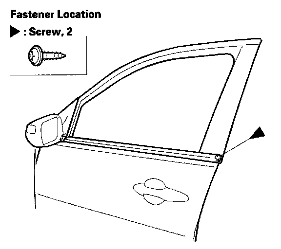
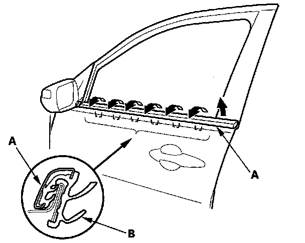
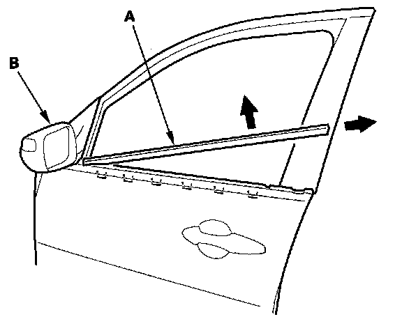

Front Door Window Glass Weatherstrip: Service and Repair
Front Door Glass Outer Weatherstrip ReplacementSpecial Tools Required
KTC trim tool set SOJATP2014 *
* Available through the American Honda Tool and Equipment Program
NOTE:
- If you remove the door glass outer weatherstrip, replace it with a new one because it will bend.
- Put on gloves to protect your hands.
- Take care not to scratch the door.
- Use the appropriate tool from the KTC trim tool set to avoid damage when removing components.
1. Remove the door panel.

2. Remove the screw from the rear edge of the door.

3. Starting at the rear, pull the door glass outer weatherstrip (A) up at each portion where the inner molding (B) catches the inside edge of the window slot.

4. Pull the rear of the glass outer weatherstrip (A) away from the door, then pull the front end of it out from under the power mirror (B).
5. Install new weatherstrip in the reverse order of removal.